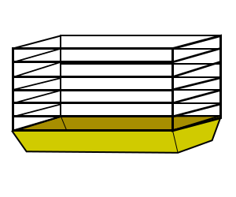
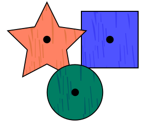
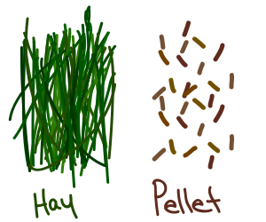

When you have or when you are thinking of getting that new guinea pig, you still have to consider not only the cost of the pet itself, the pet is almost always the cheapest part of getting a pet. Here is a basic list of things you need to keep your pet happy.
Living Spaces
Whether it is the squirrel you saw in the park, to that little ant on the floor, everyone needs a place that they can live and call home. For a guinea pig, that place can be either a cage or a pen of some sort. Both provide some form of safety, but require different amounts of space.

At stores that specialize in pets such as Pet Smart and Pet Value to name a two, they sell a variety of different toys and chews for your pet. They can come in all different shapes, sizes, and colors. Guinea pigs need chew toys because their teeth never stop growing throughout their whole lives. To avoid unessesary trips to the vet, get something for your piggy to gnaw on. The only toys not recommended for guinea pigs would be balls (like hamster balls) and wheels. Their backs do not handle them very well.

Guinea pigs are a special kind of animal in where, you need to buy more than just the pellets and the hay for their diet. They need some form of vitamin C because like humans, they connot produce their own vitamin C. People also do not advise buying vitamin C drops to add to water because it turns the water green, makes the water tastes funny and can clog the nozzle of the water bottle.
